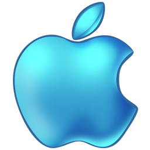
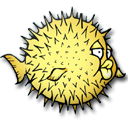
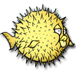
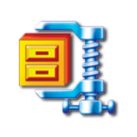
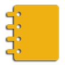

Download
The current version is 3.0.5-rc2, which was released on .
See the version history for a list of changes.
NOTE: Capstone has been released under the BSD license. There is no obligation, except that products using Capstone need to redistribute in the same package file LICENSE.TXT found the source of Capstone.
Git repository 
The latest version of the source code can be retrieved at our Git repository.
Refer to the Wiki Changelog of our development branch to peek into the features of the next release.
Package repositories  
 
 

At the moment Capstone are available for Mac OSX, Ubuntu, Debian, Fedora Core, FreeBSD, OpenBSD, NetBSD & Python in some package repositories. See Documentation for instructions.
Source archive 
This package contains:
- The complete source code for the Capstone framework.
- Bindings for Java & Python (at the moment, Ocaml binding is only available in the Git repository).
- A collection of example and test programs.
This is the recommended version for all platforms.
Community bindings 
Besides PowerShell, Python, Java & Ocaml get supported in the main code, some bindings for other languages are created and maintained by the community.
- Gapstone: Go binding (by Ben Nagy).
- Crabstone: Ruby binding (by Ben Nagy).
- Capstone-Vala: Vala binding (by Pancake).
- Capstone.NET: .NET framework binding (by Ahmed Garhy).
- Node-Capstone: NodeJS binding (by Jason Oster).
- CCcapstone: C++ binding (by Peter Hlavaty).
- LuaCapstone: Lua binding (by Antonio Davide).
- Capstone-RS: Rust binding (by Richo Healey).
- Capstone-Perl: Perl binding (by Tosh).
- TCapstone: Delphi/Free Pascal binding (by Stievie).
- CapstoneJ: Java binding (by Keve Müller).
- Hapstone: Haskell binding (by ibabushkin).
- Emacs-capstone: Emacs (elisp) binding (by Bas Alberts).
- C# binding (by Matt Graeber) (Note: this is only for the older version Capstone 2.0).
Windows - Core engine 
NOTE: This is necessary for all bindings (except Python) & also for C programming.
This package contains:
- README & license file.
- The Capstone header files (*.h) for C programming.
- 32-bit/64-bit DLLs & static libraries for Microsoft Windows 32-bit/64-bit.
- cstool (cstool.exe)
Python module for Windows - Binaries
NOTE: since this installer is self-contain, no need to install the core engine above.
This will install Capstone module into your corresponding Python edition.